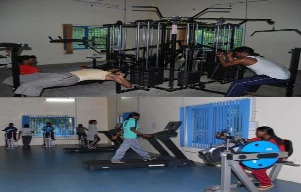
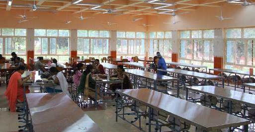

About
Pondicherry University has twenty hostels on the campus, of which thirteen are for boys, seven are for girls.Out of the thirteen boys hostels, 9 are for PG courses and four for Research Scholars. Of the seven girls hostels, six are for PG students and one is for Research Scholars. Due to limited accommodation, students from distant places will be given preference.The University has well furnished AC & non AC facilities for the foreign students to stay in C.V.Raman Hostel for boys (50 rooms) and Madame Curie Hostel for girls (50 rooms). The fee structure is different from the general hostel fees.
Building
The boys & girls hostel building is a 2-storey structure. Each Hostel has maximum 74 rooms double sharing rooms, all with a window, cupboard, and enough niches. The hostels have one common rooms used for recreational. Watercoolers are installed on each floor. Fire extinguishers and other safety measures are taken care of. The building can resist high magnitude earthquakes.

Gymnasium
Both Boys and Girls hostel has a gymnasium. It has all the basic exercise equipments like dumbbells, barbells, bench press, etc. It also has other major equipments like tredmills, exercise bike, squat station, hammer strength machine, cables and pulleys, lat pull down machine, leg extension machine and few more. The University has two outdoor stadiums, one with a capacity of 800 for football and a standard 400 meters track, and the other one being Rajiv Gandhi Cricket Stadium for 1000 with an international standard pitch. Besides it has also tennis courts, volley ball courts and basket ball courts.

Mess
Students who are admitted to the hostels are provided food in the mess. Hostel mess is compulsory for all hostellers. No permission will be granted for dining outside the respective hostel mess under any circumstances. All the messes, except Bharathidasan Hostel and Subramania Bharathi Hostel, have been outsourced. Five well-equipped mega messes (three for boys & two for girls) are available for the use of students of the University. The hostel messes are run by experienced and qualified caterers. The messes offer meals at reasonable rates.